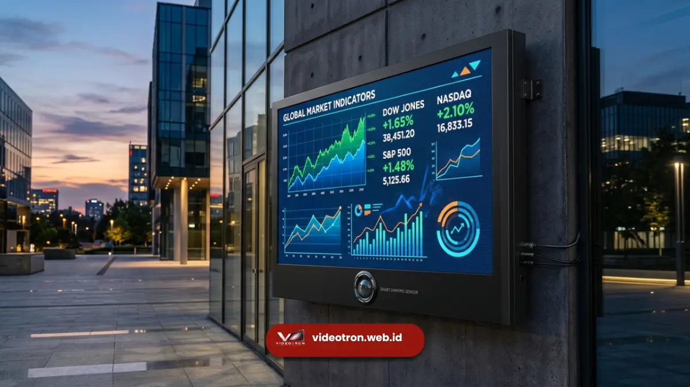

Manfaat brightness sensor otomatis bagi videotron bisnis meliputi efisiensi biaya listrik, tampilan konten yang lebih konsisten, perlindungan terhadap komponen LED, serta kenyamanan visual yang mendukung citra profesional perusahaan di mata audiens maupun mitra bisnis.
Videotron kini menjadi salah satu instrumen komunikasi visual yang banyak digunakan perusahaan untuk kebutuhan branding, promosi, hingga penyampaian informasi korporat. Namun, videotron yang beroperasi tanpa manajemen kecerahan otomatis berpotensi menimbulkan biaya operasional lebih tinggi dan tampilan yang kurang optimal, yang pada akhirnya memengaruhi efektivitas investasi videotron itu sendiri.
Poin Penting untuk Videotron Bisnis:
- Brightness sensor otomatis membantu menekan biaya listrik operasional videotron jangka panjang.
- Fitur ini menjaga tampilan konten tetap konsisten dan profesional di mata audiens.
- Komponen LED lebih terlindungi dari beban kecerahan berlebihan yang tidak perlu.
- Videotron dengan sensor cahaya mendukung citra perusahaan yang mengutamakan efisiensi.
- Manfaat ini semakin terasa pada videotron yang beroperasi dalam durasi panjang setiap harinya.
Apa Manfaat Utama Brightness Sensor Otomatis bagi Videotron Bisnis?
Manfaat utama brightness sensor otomatis bagi videotron bisnis adalah efisiensi biaya operasional dan konsistensi kualitas tampilan, karena kecerahan layar disesuaikan secara otomatis sesuai kebutuhan aktual tanpa memerlukan pengawasan manual dari operator.
Bagi perusahaan yang mengoperasikan videotron secara rutin, baik untuk keperluan iklan, informasi publik, maupun dekorasi acara korporat, efisiensi operasional menjadi faktor penting dalam perhitungan return on investment. Videotron yang beroperasi pada kecerahan maksimal sepanjang waktu tidak hanya boros energi, tetapi juga mempercepat penurunan performa komponen LED dalam jangka panjang.
Bagaimana Fitur Ini Memengaruhi Biaya Operasional Jangka Panjang?
Brightness sensor otomatis memengaruhi biaya operasional jangka panjang dengan cara menekan konsumsi daya listrik Videotron. Karena kecerahan layar hanya dinaikkan sesuai kebutuhan kondisi cahaya sekitar, bukan menyala pada tingkat maksimal secara terus-menerus.
Videotron bisnis yang beroperasi selama 12 hingga 16 jam per hari umumnya menjadi salah satu komponen biaya listrik terbesar dalam operasional fasilitas, terutama jika videotron memiliki ukuran besar dan dipasang di area outdoor. Dengan penyesuaian kecerahan otomatis, konsumsi daya dapat ditekan secara umum pada jam-jam dengan intensitas cahaya sekitar yang lebih rendah, seperti pagi hari, sore menjelang malam, maupun saat cuaca mendung.
Selain penghematan listrik, videotron yang tidak dipaksa beroperasi pada kecerahan maksimal sepanjang waktu juga cenderung memiliki umur pakai modul LED yang lebih Panjang. Sehingga menekan frekuensi dan biaya penggantian komponen di masa mendatang.

Videotron korporat dengan kecerahan adaptif memperkuat citra profesional.Apa Pengaruhnya terhadap Citra Merek dan Kenyamanan Audiens?
Brightness sensor otomatis turut memengaruhi citra merek perusahaan karena tampilan videotron yang selalu terlihat jelas, tidak pudar di siang hari maupun tidak menyilaukan di malam hari, mencerminkan profesionalisme dan perhatian terhadap detail dalam menyampaikan pesan visual kepada publik.
Videotron yang tampil optimal dalam berbagai kondisi cahaya memberikan kesan bahwa perusahaan memperhatikan kualitas dalam setiap aspek komunikasi visualnya, termasuk hal-hal teknis yang mungkin tidak disadari langsung oleh audiens namun memengaruhi pengalaman mereka secara keseluruhan. Sebaliknya, videotron dengan kecerahan tidak stabil, misalnya terlalu redup saat siang atau terlalu menyilaukan saat malam, berpotensi menimbulkan kesan kurang profesional dan mengganggu kenyamanan audiens di sekitarnya.
Bagi perusahaan yang menggunakan videotron untuk keperluan acara korporat, pameran, atau fasad gedung, kenyamanan visual audiens turut berkontribusi terhadap efektivitas pesan yang ingin disampaikan, baik itu informasi produk, identitas merek, maupun pengumuman penting lainnya.
Manfaat Tambahan bagi Operasional Videotron Sehari-hari
Selain efisiensi biaya dan citra merek, brightness sensor otomatis juga memberikan sejumlah manfaat operasional berikut bagi bisnis yang menggunakan videotron secara rutin:
- Mengurangi beban kerja operator. Tim operasional tidak perlu lagi memantau dan menyesuaikan kecerahan videotron secara manual sepanjang hari, sehingga dapat fokus pada tugas lain yang lebih strategis.
- Meminimalkan risiko human error. Penyesuaian otomatis mengurangi kemungkinan kelalaian dalam mengatur kecerahan videotron, yang jika terjadi dapat berdampak pada kualitas tampilan selama periode tertentu.
- Mendukung operasional videotron 24 jam. Bagi videotron yang beroperasi tanpa henti, fitur ini memastikan kecerahan tetap sesuai kondisi lingkungan tanpa memerlukan pengawasan sepanjang waktu.
- Menjaga konsistensi kualitas di berbagai lokasi. Bagi perusahaan dengan beberapa unit videotron di lokasi berbeda, fitur ini membantu menjaga standar tampilan yang seragam meski kondisi cahaya masing-masing lokasi berbeda.
Brightness sensor otomatis memberikan manfaat nyata bagi videotron bisnis, mulai dari efisiensi biaya operasional, perlindungan komponen LED, hingga dukungan terhadap citra profesional perusahaan di mata audiens. Bagi perusahaan yang berencana berinvestasi pada videotron untuk kebutuhan jangka panjang, memastikan unit yang dipilih dilengkapi fitur ini menjadi langkah penting agar investasi memberikan nilai maksimal.
Konsultasikan kebutuhan videotron bisnis Anda dengan tim videotron.web.id untuk mendapatkan rekomendasi spesifikasi dan penawaran yang sesuai dengan anggaran serta lokasi pemasangan Anda.

Hawa Nadira
LED Technology Consultant dan Visual Educator
Konsultan dan spesialis solusi display digital berdedikasi tinggi yang fokus membagikan panduan edukatif mengenai penerapan teknologi layar LED videotron untuk kebutuhan interior modern di Indonesia.